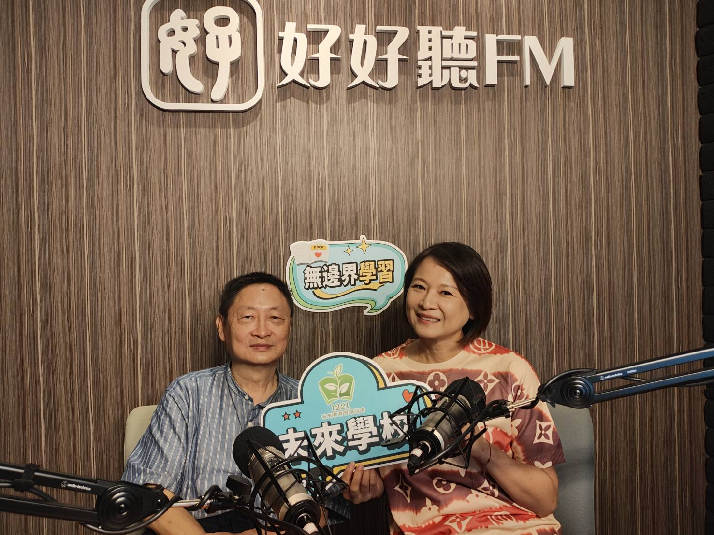

AI 時代來臨，上一代的升學劇本還適用嗎？
AI 進化的速度遠超人類，當代社會結構正面臨劇烈翻轉。然而，許多家長仍深陷舊時代的焦慮中，拼命把孩子往私校與補習班送，追逐名校光環。這種「用昨天的地圖，找今天的目的地」的做法，無疑是瞄準錯誤的目標。
丁志仁指出，過去追求升學是為了求得溫飽，但在當前產業結構下，「學歷與收入的關係已經越來越淡」。相反地，許多傳統上被視為勞力、不夠體面的工作，因不可被 AI 取代，反而擁有極高的市場價值。例如，具備專業技術的水電師傅，或是滿足雙薪家庭需求的「金質清潔公司」，其訂單接不完且收入穩定。

相對地，如果還像以前一樣，逼著孩子去科學園區「賣肝換錢」，或是經歷千辛萬苦考進頂大，卻未必能成為孩子日後安身立命的所在。家長必須體認到，產業與職業結構正在徹底重組，教育的核心價值也必須隨之轉型。
少子化衝擊下的轉機：迎向 70% 的國立高中入學機會
台灣正面臨嚴峻的新生兒縮減潮。隨著這波少子化浪潮即將從國小席捲至國中，未來的教育市場將產生結構性的大洗牌。
丁丁分析，當國中生升讀國立高中的就學機會率即將突破 70% 時，教育的「買方市場」已然成形。未來，不再需要靠補習班拼得死去活來，像雙溪高中等推動優先免試的高中將成為新常態。拼頂尖名校（如建北、台清交）將成為人口中的少數，這也為台灣創造了一個史無前例的契機——成為東亞少數能真正走向「多元社會」的國家。
實驗教育三法的遠見：允許人民動手打造理想教育
台灣之所以能在東亞國家中率先嗅到多元社會的可能，10 年前通過的「實驗教育三法」扮演了關鍵推手。

許多歐美國家（如瑞典）基於風險考量，至今仍對在家教育或體制外辦學設下重重限制。然而，台灣展現了海盜後裔般的「短小精薄快」精神，勇敢跨出這一步，允許人民動手打造符合自身需求的教育。正是這股蓬勃的實驗教育能量，打破了「單一成績單衡量所有小孩」的僵化框架，讓行行出頭天成為可能。
告別內鬥，走向包容：台灣最佳的生存策略
台灣是一個由多梯次移民構成的人口結構。如果缺乏多元共融的共識，族群間的彼此內鬥將無情地撕裂社會。
因此，走向多元與包容，不只是教育選擇的問題，更是台灣最佳的國家生存策略。如過去政府推動的「青年教育與就業儲蓄帳戶方案」及教育界「務實致用的精神」，都在鼓勵 18 歲高中職畢業生不必盲目升學，而是先入社會歷練、貼近真實產業。
當我們不再用單一標準去標籤化每一個孩子，容許他們以自己的節奏發光發熱，台灣才有機會真正擺脫集體沈沒的危機，走向一個處處充滿包容、尊重與可能性的未來。